Learners Speak

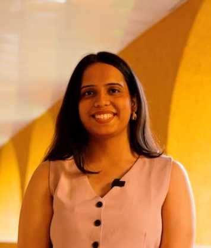
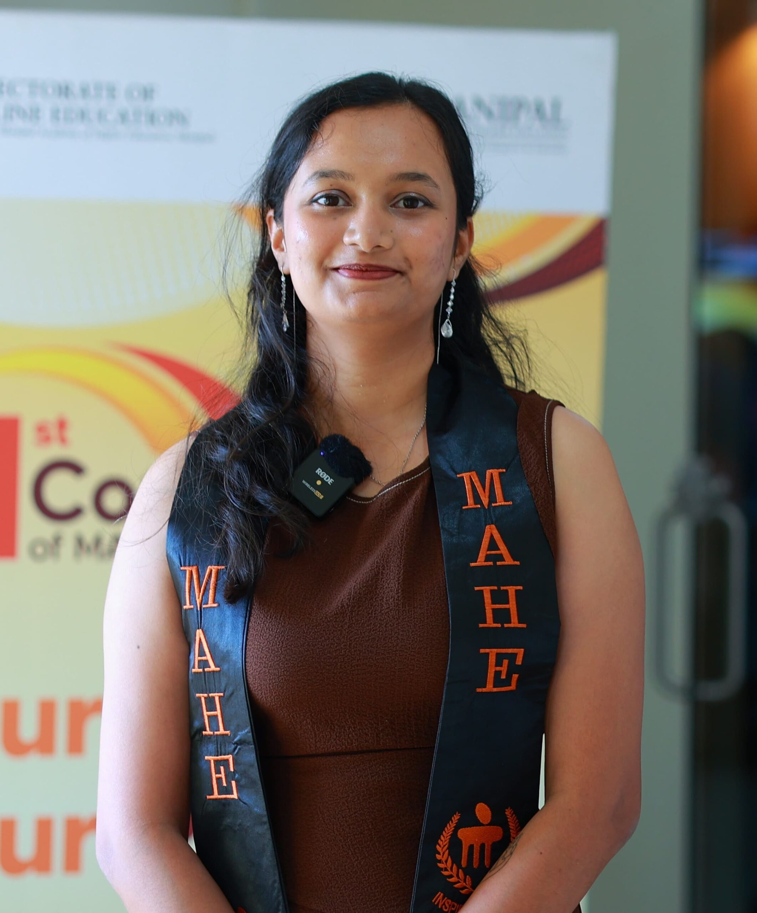
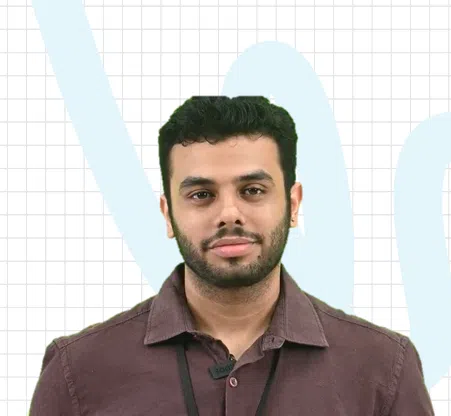
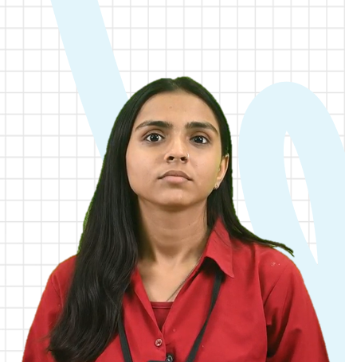

Real stories, Real impact
Meeting everyone in person felt very refreshing and made me feel connected and more confident. he campus environment was very positive and welcoming. I felt like I was a part of the university community. I would suggest all learners to explore the campus immersion program.
Meeting everyone in person felt very refreshing and made me feel connected and more confident. he campus environment was very positive and welcoming. I felt ...
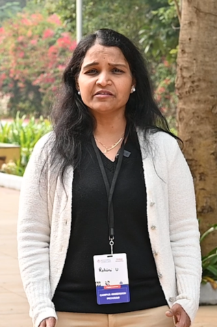


I had started working before pursuing my online degree. As a working professional, it is difficult to manage both work and education at once but my mentor helped me tremendously. Even during off-hours, she was always there – guiding me, reminding me to submit assignments, and what not! I am very thankful to MUJ Online for providing me with such exceptional support that helped me gain my degree.
I had started working before pursuing my online degree. As a working professional, it is difficult to manage both work and education at once but my mentor h ...
I belong to a small town, and I am the first person who pursued an online degree. In a place where people don’t even know what online degrees are, I happened to pursue it and here I am, at my own graduation, inspiring many others. Even though I pursued my BCA offline, I learned more in my online degree. That shows the quality of education MUJ provides and its commitment to provide world-class education.
I belong to a small town, and I am the first person who pursued an online degree. In a place where people don’t even know what online degrees are, I h ...
I love Manipal University Jaipur because it gave me a chance to learn new things through its provision of online degrees. The main takeaway from my graduation is that I got to make new friends and I was exposed to new cultures that helped me hone my communication skills. Attending the convocation to collect a degree I truly cherish, has to be the best feeling.
I love Manipal University Jaipur because it gave me a chance to learn new things through its provision of online degrees. The main takeaway from my graduati ...
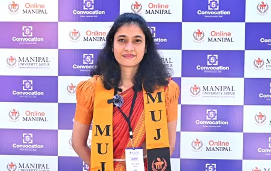
My journey with MUJ Online has been incredible. I got to learn a lot more things than what I had learnt in my Bachelors, which I am able to apply in my workplace. So, if someone says online education is sub-par with traditional mode, they’re clearly wrong! I advise all future learners to join MUJ Online because it has not only been academically enriching for me but also extremely fun. Being physically present at my graduation, collecting my degree feels unreal and I have MUJ to thank for that.
My journey with MUJ Online has been incredible. I got to learn a lot more things than what I had learnt in my Bachelors, which I am able to apply in my work ...

Before the program, I was only focussed on my career and work but after taking up this program, I have realised how essential networking with people is. MUJ Online’s networks has helped me connect with peers who push me forward and helped me explore an extrovert side of me I never thought I had!
Before the program, I was only focussed on my career and work but after taking up this program, I have realised how essential networking with people is. MUJ ...

Online MCom from MUJ has not only helped me change careers but also boosted my confidence exponentially. Today, at my convocation, I have been able to meet many of my friends whom I only knew virtually. The entire journey, from learning to graduation, has been extremely fulfilling.
Online MCom from MUJ has not only helped me change careers but also boosted my confidence exponentially. Today, at my convocation, I have been able to meet ...
Choosing MUJ Online was a strategic move for my career. Coming from a globally recognized university carries significant weight, but the true value was in the curriculum. As a Supply Chain Manager, I rely on practical application; the intensive case studies provided the real-world insights I needed to excel in my day-to-day operations.
Choosing MUJ Online was a strategic move for my career. Coming from a globally recognized university carries significant weight, but the true value was in t ...

My father passed away in 2021 due to COVID, and I had to take over the family business because of which I couldn’t pursue my higher education. I am very grateful to MUJ Online because I got the opportunity to study while managing the business. BCA from MUJ Online has equipped me with skillsets that will help me prepare for NIMCET and finally fulfill my dream of getting into NIT.
My father passed away in 2021 due to COVID, and I had to take over the family business because of which I couldn’t pursue my higher education. I am ve ...
I am a BCA graduate and badly needed a degree in MCA to be able to climb up the corporate ladder. I have friends studying from other universities and know that no university is as good as MUJ. The quality of academic content and curriculum provided by MUJ Online is top-notch.
I am a BCA graduate and badly needed a degree in MCA to be able to climb up the corporate ladder. I have friends studying from other universities and know t ...
When you’re a fresher looking for a job, certifications help a lot to crack interviews. MUJ’s access to Coursera along with the course curriculum helped me achieve it. I have previously explored many job roles and industries, but what I wanted to do the most was handling accounts in Finance. MUJ Online’s BCom provided me all the skillsets required to pursue my dream job.
When you’re a fresher looking for a job, certifications help a lot to crack interviews. MUJ’s access to Coursera along with the course curriculu ...
As a robotics engineer working with industrial robots, it is necessary to have a strong base in programming languages like C++, Python, & debugging technique. Hence, I chose Online BCA from Manipal University Jaipur because MUJ has been known to have a great course curriculum. It has provided me with all the skills I have wanted to gain and more!
As a robotics engineer working with industrial robots, it is necessary to have a strong base in programming languages like C++, Python, & debugging tech ...

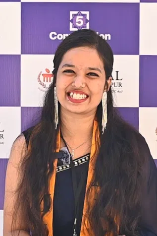
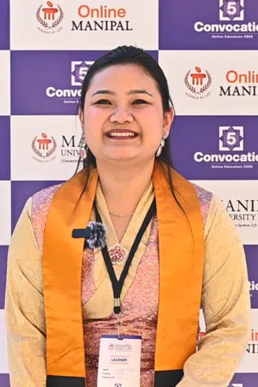
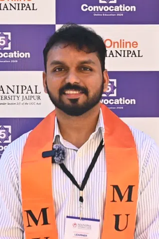
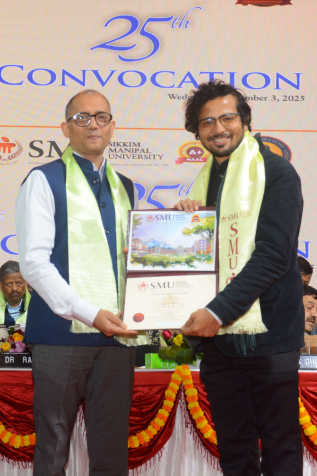
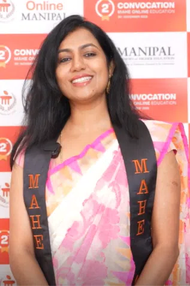
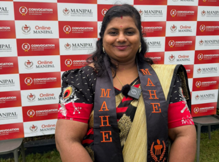
Due to personal issues, I wasn’t able to complete my degree on time. But the MAHE Online team helped me, guided me, and supported me to complete it and here I am! The program helped me gain skillsets for my job. Not only did it help, but I also happened to excel at them which paved a strong path for my career growth.
Due to personal issues, I wasn’t able to complete my degree on time. But the MAHE Online team helped me, guided me, and supported me to complete it an ...
MAHE Online provided me a great learning and upskilling experience. One of its greatest strengths being its faculty. The faculty was interactive, supervised us regularly, and provided instructions every step of the way. Not only do I recommend MAHE Online to others, but would also like to enrol in a new course myself!
MAHE Online provided me a great learning and upskilling experience. One of its greatest strengths being its faculty. The faculty was interactive, supervised ...
I am a Quality Analyst and had a basic understanding of reporting tools but wanted more exposure to Power BI, Management, and Econometrics. And through MAHE Online’s PGCP provided me exactly that. If you are a working professional, Online PGCP in Business Analytics is the best choice for upskilling and levelling up.
I am a Quality Analyst and had a basic understanding of reporting tools but wanted more exposure to Power BI, Management, and Econometrics. And through MAHE ...
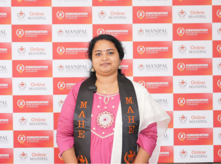
My favourite courses were Machine Learning, Python, Statistics, and Analytics because it was more practical than theory unlike other institutes. I would especially recommend Online MSc for all working professionals because it is very flexible. There is constant support from the faculty and mentors. Even when I could not attend live classes, recordings were always made available. Gaining a degree whilst working has been the best part of my journey.
My favourite courses were Machine Learning, Python, Statistics, and Analytics because it was more practical than theory unlike other institutes. I would esp ...
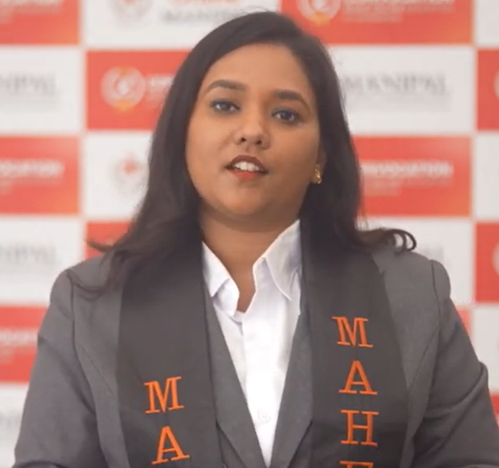
As a founder working in the digital transformation and SaaS space for MSMEs, I was looking for structured learning that could strengthen my entrepreneurial mindset. That’s what led me to the PGD in Entrepreneurship & Innovation at MAHE. I joined the program to validate my business ideas, understand practical frameworks, and learn directly from experienced mentors. The program helped me refine the core concept of my venture, apply design thinking more effectively, sharpen my value proposition, and view my business from an investor’s perspective. The mentors brought strong industry insights, making the learning practical and immediately applicable. The well-structured curriculum, experienced faculty, and practical, application-focused approach really stands out. My venture motif is to build solutions that simplify operations, enable data-driven decisions, and unlock growth for millions of small manufacturers and traders. For this, the learnings would be of great help, and I cannot wait to influence the next wave of grassroots entrepreneurship in India by digitally enabling millions of small businesses.
As a founder working in the digital transformation and SaaS space for MSMEs, I was looking for structured learning that could strengthen my entrepreneurial ...

Coming from a mechanical engineering background and now managing a family-owned seafood export business in Udupi, I was always curious about areas like finance, HR, sales, GRC, and how large-scale companies operate. That curiosity led me to study PGD E&I under online Manipal. The reasonable fee structure and flexible class timings made it the right choice, and I was easily able to balance studies with personal life. The practical learning offered by senior industry experts in sales, marketing, HR, finance, GRC, and fundraising was extremely valuable. The faculty were always open to answering questions related to any industry, tech, fintech, telecom, automobile, airlines, or even traditional brick-and-mortar businesses. My biggest takeaway from the program would be the importance of customer relationships they taught. After the program, I am very confident in building my business and taking it to great heights!
Coming from a mechanical engineering background and now managing a family-owned seafood export business in Udupi, I was always curious about areas like fi ...

Being in the corporate world for over 20 years, I reached a stage where I wanted my ‘Mid-Life Rises’, a conscious shift from an employee mindset to becoming a full-time entrepreneur. I have always been a systems thinker, and I realized I wasn’t just searching for ideas; I was looking for a structured path that could shape me into a founder and, one day, a CEO. That’s exactly what the online PGD in Entrepreneurship & Innovation offered me. Every weekend of the program felt transformative. Learning from real entrepreneurs, not just lecturers, helped me structure my ideas, validate them, and turn them into action plans. The flexibility of recorded sessions made balancing personal life easy, and the mentorship strengthened me to face entrepreneurial challenges with confidence. I am currently focused on building my dream ventures, IPNOTEC, which aims to shape phoneless and keyless human–tech experiences, and CLUBICLES, a platform that transforms everyday spaces into collaborative coworking hubs. As I work on my ventures, I can say this program didn’t just teach me; it empowered me.
Being in the corporate world for over 20 years, I reached a stage where I wanted my ‘Mid-Life Rises’, a conscious shift from an employee mindset to becoming ...

With over 15 years of experience across Meditech, Fintech, and the BFSI domain, I have always been passionate about building businesses and guiding aspiring entrepreneurs. But enrolling in the PGD in Entrepreneurship & Innovation at Online Manipal brought a level of clarity I didn’t know I needed. One insight from the program completely shifted my thinking: don’t fall too much in love with your business idea. That single line cleared the mental clutter I carried for years. I now evaluate ideas with a wider, 360-degree perspective, that is, focusing on real problems, market gaps, and sustainable opportunities. The live interactions were the true highlight. Learning from Raghupati Sir and listening to young entrepreneurs share their journeys gave me grounded, real-world inspiration that reshaped my mindset. This program didn’t just teach me concepts; it helped me realize my purpose. Online Manipal opened up space for me to explore, unlearn, and rebuild my entrepreneurial vision with renewed confidence.
With over 15 years of experience across Meditech, Fintech, and the BFSI domain, I have always been passionate about building businesses and guiding aspiring ...
I want to get into the imports and exports business and could not find a better program than BBA International Business from MUJ to study and excel at the same. The program is well designed and meets all the learner needs. It’s been absolutely fantastic to have been an MUJ learner. Now, I am not only trained in education, but I can excel in my career too.
I want to get into the imports and exports business and could not find a better program than BBA International Business from MUJ to study and excel at the s ...
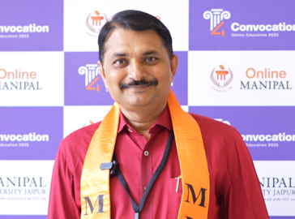
Online programs from MUJ focus not only on theory and practical but also skillset development, which is a very important aspect of education. I really like how the courses offer flexibility for working professionals like me. The list of benefits of joining MUJ is so long that not only have I finished my BBA, but I have also enrolled for my MBA.
Online programs from MUJ focus not only on theory and practical but also skillset development, which is a very important aspect of education. I really like ...
6-7 years ago, online degrees weren’t a thing when I needed it. But the minute, I heard about an esteemed institution like MUJ providing online degrees, I grabbed the opportunity. My confidence has boosted significantly. So much so that, in my workplace, I was just a mentor, now I am an Academic Head. I have seen so much growth just from my BBA that it also made me pursue my Online MBA from MUJ.
6-7 years ago, online degrees weren’t a thing when I needed it. But the minute, I heard about an esteemed institution like MUJ providing online degree ...

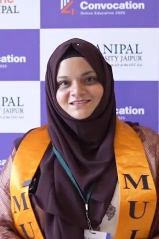
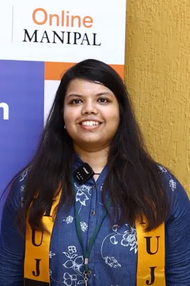


I have a background in finance in the automobile industry but want to launch a clothing brand, which is still in the ideation phase. It is a very vast market and extremely risky, but also highly profitable if it succeeds. I researched various courses but MAHE’s Entrepreneurship and Innovation program aligned with my goals. The program provided me with opportunities such as interactions with investors, venture capitalists, and founders of other companies, unlike other courses that mainly focus on theoretical knowledge. I understood how various business models work and how to gain an edge over competitors. Our mentors provided us with comprehensive case studies which helped me develop a growth mindset and the skills to meet investor expectations. The course pushed me towards execution, emphasizing that planning is a crucial step for successful implementation.
I have a background in finance in the automobile industry but want to launch a clothing brand, which is still in the ideation phase. It is a very vast marke ...

I am developing a startup called Astro G, an AI-first, agent-driven application. The problem we are trying to address is the uncertainty caused by a saturated market of astrologers and its unorganized nature. Our app aims to provide a consistent ‘buddy’ through life by using AI and LLM models. Many entrepreneurs fail because they do not follow processes. In this Entrepreneurship and Innovation program, I learnt to follow processes which I have not been following, and it has helped me optimize my work. I did not want to pursue an MBA which most online colleges provide hence, Online Manipal’s program was the perfect fit for me. My peers in the program also helped me gain different perspectives and the mentors provided excellent guidance as well.
I am developing a startup called Astro G, an AI-first, agent-driven application. The problem we are trying to address is the uncertainty caused by a saturat ...
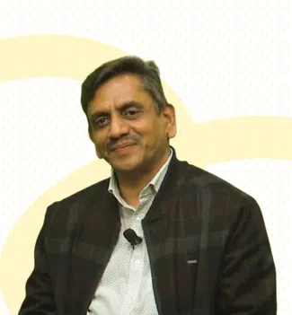
A Botanist by training, I specialize in Molecular Biology and Genomics. My startup aims in developing personalized interventions to identify causes of premature deaths and promote healthy longevity by integrating ML, Biology, and Genomics. For me, entrepreneurship is neither a cakewalk nor impossible. I believe that it requires passion, consistent effort, and adaptability. My 6 years in business taught me development but I lacked the knowledge of market-fit, delivery strategy, and revenue generation. I chose MAHE’s Entrepreneurship and Innovation program to overcome this challenge. It addressed my need to understand the business comprehensively beyond management, from ideation to delivering value to consumers. My mentor, Sanjeev, has provided me with the best take-home knowledge I could get.
A Botanist by training, I specialize in Molecular Biology and Genomics. My startup aims in developing personalized interventions to identify causes of prema ...
I have a background in nuclear medicine physics for 5 years. However, my true passion lies in fashion, which is why I am launching my own clothing brand called Kreigster. I came upon the Entrepreneurship and Innovation program while job-hunting in Australia and finally decided to pursue my passion. I am also a Manipal alumnus, hence can vouch for its standards and trust the university. The online format provided me with the same opportunity and quality that traditional education does. Being an entrepreneur is tough because you can never really predict the challenges and obstacles, it’s always new and surprising. I have learnt to overcome these challenges through the Entrepreneurship and Innovation course.
I have a background in nuclear medicine physics for 5 years. However, my true passion lies in fashion, which is why I am launching my own clothing brand cal ...

I am an architect from Chennai and have handled over 90 projects in my career. While strong technically, I joined the entrepreneurship program to improve business, marketing, lead generation, and financial skills. As an entrepreneur in architecture, it’s challenging to identify and reach the right target audience amidst tough competition. Since I do not have a family business background, MAHE’s Entrepreneurship and Innovation program helped me gain strong business skills that I previously lacked. The course has significantly improved my understanding of market criteria, competition, and ways to position my company to come out on top.
I am an architect from Chennai and have handled over 90 projects in my career. While strong technically, I joined the entrepreneurship program to improve bu ...

Coming from a technical background, entrepreneurship was entirely a new concept for me. As an entrepreneur who runs a family business called Senthil Engineering Works, I needed external support. Hence, I chose Online Manipal’s Entrepreneurship and Innovation program to learn the best methods to run and manage a business. The course helped me in decision-making and managing risks, which is crucial for every entrepreneur. I love entrepreneurship for the fact that it provides the freedom to inspire others.
Coming from a technical background, entrepreneurship was entirely a new concept for me. As an entrepreneur who runs a family business called Senthil Enginee ...
As an engineering graduate, I’ve always been driven by entrepreneurship. That’s why I pursued a course in product development, which led me to launch my own coffee brand, Coffee NAD. I was inspired by my grandparents, who were successful entrepreneurs for over 30 years, managing multiple businesses. However, I struggled with finding people who could guide me on how to build a brand which is why I chose to pursue this Entrepreneurship and Innovation program from MAHE. Manipal has always been known for excellent education. It provided me with a hybrid education model where I could collaborate while continuing my online education.
As an engineering graduate, I’ve always been driven by entrepreneurship. That’s why I pursued a course in product development, which led me to launch my own ...
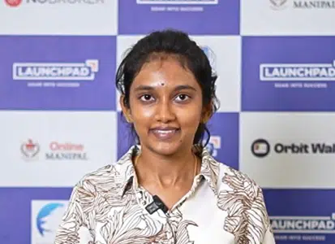
My learning journey with Manipal University Jaipur has been enriching. The courses are taught by experts in a well-structured and practical way which helped me hone my skills in sales and business development. The quality of teaching is excellent. The guidance by the mentors has played a key role in enhancing my educational journey here, they have always been approachable. I am glad to have chosen MUJ for my Online MBA.
My learning journey with Manipal University Jaipur has been enriching. The courses are taught by experts in a well-structured and practical way which helped ...
Manipal University Jaipur provided me the opportunity to attend in-person interviews which added a personal touch to the placements process. Even though I am an online learner, the face-to-face hiring allowed me to interact with recruiters of multiple companies. I was exposed to a variety of domain options to explore and choose from for my future.
Manipal University Jaipur provided me the opportunity to attend in-person interviews which added a personal touch to the placements process. Even though I a ...
MBA from Manipal University Jaipur helped me develop a solution-oriented mindset, understand customer wants and needs, improve my analytical thinking abilities, and master my communication skills which helped me land a role at Bajaj Allianz. Sessions like resume building & personal interview preparations conducted by the Online Manipal Placement team helped me boost my confidence for the in-person interview.
MBA from Manipal University Jaipur helped me develop a solution-oriented mindset, understand customer wants and needs, improve my analytical thinking abilit ...
Access to the Bloomberg Terminal, which is rarely available in India, gave me valuable insights into finance and accounting concepts through real-time data and tools. This globally recognized platform has not only enhanced my learning but will also give me an edge in securing strong placement opportunities.
Access to the Bloomberg Terminal, which is rarely available in India, gave me valuable insights into finance and accounting concepts through real-time data ...
Applying concepts through hands-on tools really solidified my understanding of the subjects. The exposure to WordPress for web designing and working on AI-related projects made the experience practical, insightful, and highly engaging.
Applying concepts through hands-on tools really solidified my understanding of the subjects. The exposure to WordPress for web designing and working on AI-r ...
The campus immersion experience allowed me to work hands-on with cybersecurity tools and practice real-time threat detection. It gave me valuable insights into the real-world challenges and possibilities in cybersecurity, AI ethics, and data mining. This enhanced my confidence and deepened my understanding of emerging technologies.
The campus immersion experience allowed me to work hands-on with cybersecurity tools and practice real-time threat detection. It gave me valuable insights i ...
Experiencing classes with teachers in person gave me a clear picture of what the on-campus environment would feel like. It made the entire learning journey more real, engaging, and deeply connected.
Experiencing classes with teachers in person gave me a clear picture of what the on-campus environment would feel like. It made the entire learning journey ...
I chose MAHE’s Data Science program because of its strong reputation and the growing industry demand for skills in AI and Machine Learning. The curriculum is well-structured, and the live webinars offer valuable practical insights. Attending Panorama and meeting the faculty in person was a memorable highlight of my journey. The experience reaffirmed my decision to study at MAHE and boosted my confidence in pursuing a career in Data Science.
I chose MAHE’s Data Science program because of its strong reputation and the growing industry demand for skills in AI and Machine Learning. The curriculum i ...

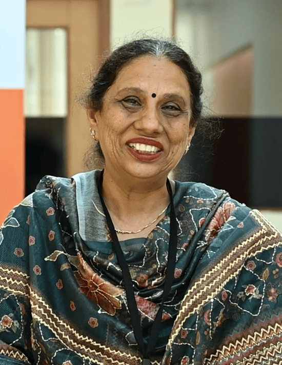
As a freelancer, juggling multiple creative projects in graphic design and videography, I needed a program that offered both flexibility and quality – and Online Manipal delivered just that. Online Manipal is not just helping me earn a degree – it’s helping me build a future where tech and creativity merge seamlessly. For any creative professional looking to add a strong tech backbone to their work, I can’t recommend it enough!
As a freelancer, juggling multiple creative projects in graphic design and videography, I needed a program that offered both flexibility and quality – and O ...
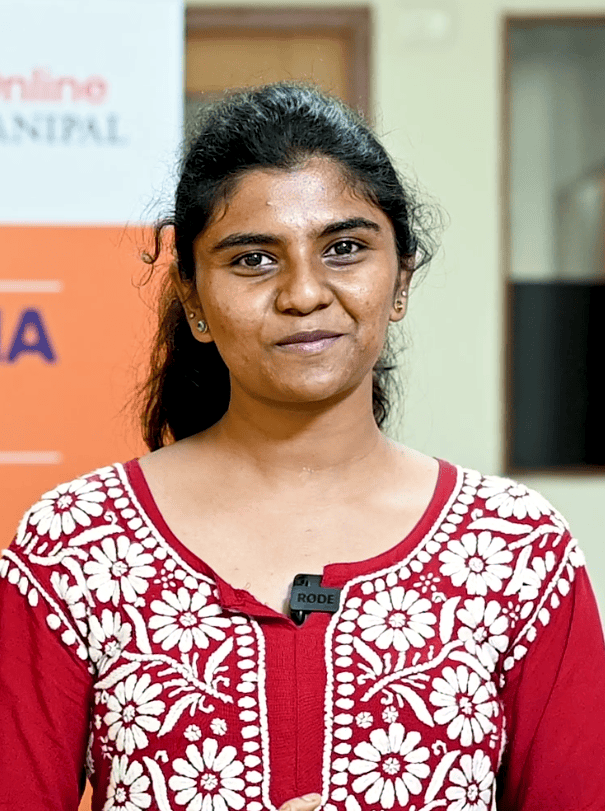


Performing at EKAM 2025 was an unforgettable experience. When I received the message that I was shortlisted, I felt a surge of excitement and gratitude at the same time. Pursuing an online degree, I never thought that I would also be given a platform to showcase my talent and love for dance. Online Manipal provided me with the right support and determination and made me a better version of myself.
Performing at EKAM 2025 was an unforgettable experience. When I received the message that I was shortlisted, I felt a surge of excitement and gratitude at t ...

During my engineering days, I used to perform at my college. Post engineering, when I started working, I never got the opportunity to perform. Being unhappy at my job, I decided to stand up for myself and pursue an online MBA for future prospects. Online Manipal not only provided me with quality education to steer my career in the right direction, but it also made my dreams come true by providing me with a stage to perform on, even if it is an online platform. The appreciation I received after the performance brought back incredible memories that I will always cherish.
During my engineering days, I used to perform at my college. Post engineering, when I started working, I never got the opportunity to perform. Being unhappy ...

Choosing to pursue my MBA in Online Manipal at MUJ was an easy choice for me because I had also completed my BBA from here. I recall an incident, 4 years ago when I started BBA, I was really nervous and had a notion that online education is boring and monotonous. But during the orientation, the faculty interaction, the course structure, and the energy in the air, was so lovely, all my doubts vanished. I respect the quality of education Online Manipal provides – it helps me build my skill sets at my own pace and provides me with campus experience through yearly events. The weekend classes and recorded sessions help me manage both my personal life and education in one-go.
Choosing to pursue my MBA in Online Manipal at MUJ was an easy choice for me because I had also completed my BBA from here. I recall an incident, 4 years ag ...

I am a freelancer in game development and do not have the time to pursue offline degree, which made me choose Online Manipal for flexibility while working. From Sleep – Work – Eat to Sleep – Work – Eat – Study, my journey has been challenging but Online Manipal made it seem like a breeze. The faculty and the course materials on the portal are truly helpful for working professionals to balance both work and studies. I would suggest Online Manipal for all working professionals since it not only provides education but also makes us industry ready.
I am a freelancer in game development and do not have the time to pursue offline degree, which made me choose Online Manipal for flexibility while working. ...

As an international student enrolled in an Indian college, I had always been curious to experience what Online Manipal had to offer. Even though the time zones are different, Online Manipal has made it easy for me to learn and grow at my own pace without any difficulties. In EKAM 2025, I also got first-hand experience of Indian college life in terms of campus tour, the warm faculty, and lifelong connections.
As an international student enrolled in an Indian college, I had always been curious to experience what Online Manipal had to offer. Even though the time zo ...
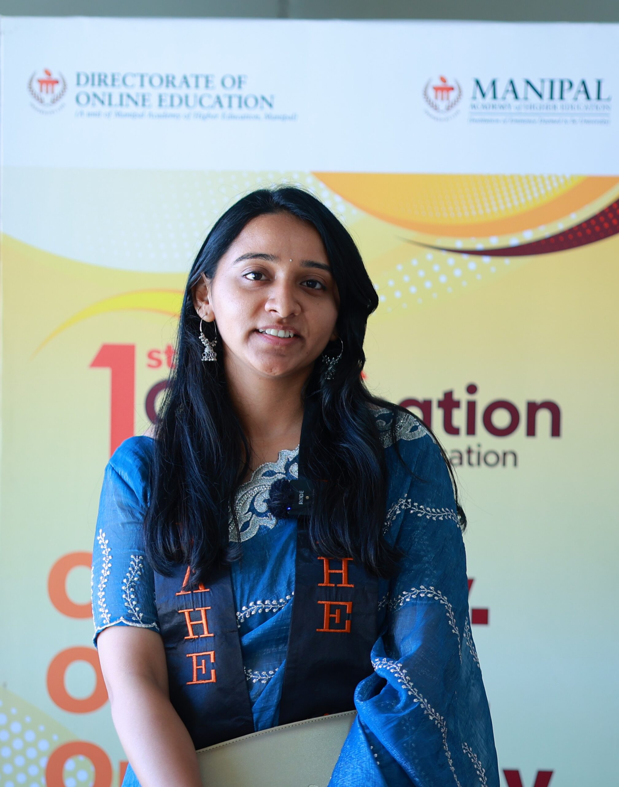

With extensive experience in the hospitality industry, I needed a flexible degree that fit my schedule without requiring to go to campus. Choosing an online MBA program from Manipal University Jaipur was one of my best decisions. The program is well-structured, and the video recordings allowed me to learn at my own pace. Earning my master’s from a reputed university has been a game-changer for my career.
With extensive experience in the hospitality industry, I needed a flexible degree that fit my schedule without requiring to go to campus. Choosing an online ...
I’m currently working at my own hospital and I wanted a degree to help me improve my operational skills and this was the best choice for me. The flexibility offered by the university allowed me to balance my work and academics.
I’m currently working at my own hospital and I wanted a degree to help me improve my operational skills and this was the best choice for me. The flexi ...

The unwavering support of the placement team at MUJ has been instrumental in providing me with good opportunities. Their dedication, guidance, and relentless efforts helped me secure a placement, even during difficult times. I am truly grateful for their commitment.
The unwavering support of the placement team at MUJ has been instrumental in providing me with good opportunities. Their dedication, guidance, and relentles ...
The comprehensive curriculum at MAHE has been pivotal in helping me land a job in the big data domain. The hands-on experience with programming languages such as Python, SQL, and R, coupled with cutting-edge technologies like Apache Spark and PySpark, has been instrumental in preparing me for the dynamic big data domain. Understanding these modern technologies, which have replaced traditional frameworks like MapReduce, played a significant role in helping me secure my current role.
The comprehensive curriculum at MAHE has been pivotal in helping me land a job in the big data domain. The hands-on experience with programming languages s ...
MUJ’s MBA helped me land a Specialist role in the Asset & Wealth Management department at Goldman Sachs. The recorded lectures, study materials, and placement preparation sessions played a crucial role in helping me securing this job. The program not only enhanced my professional skills but also gave me the confidence to excel in interviews and assessments.
MUJ’s MBA helped me land a Specialist role in the Asset & Wealth Management department at Goldman Sachs. The recorded lectures, study materials, a ...

My true passion lies in modelling. So I chose an online degree to balance my modelling career and my academics. This degree is very convenient for me, in terms of time and studies. Also, the reason I chose BBA is because I come from a business family and I also plan to be an entrepreneur in future.
My true passion lies in modelling. So I chose an online degree to balance my modelling career and my academics. This degree is very convenient for me, in te ...
Thanks to the faculty, I acquired new skills like decision-making and leadership through this program. Moreover, the flexibility of the program allowed me to pursue my passion while studying.
Thanks to the faculty, I acquired new skills like decision-making and leadership through this program. Moreover, the flexibility of the program allowed me t ...
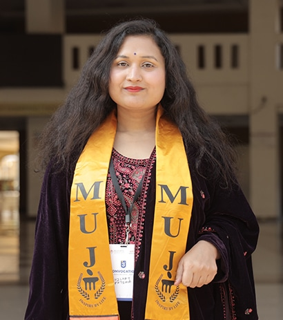
The program taught me essential skills like time management, project execution, and operational planning, which I’ve already started applying in my work. This degree has been game changing for me as it has helped me grow personally and professionally.
The program taught me essential skills like time management, project execution, and operational planning, which I’ve already started applying in my work. Th ...
This program helped me enhance my management skills and provided practical knowledge that I apply daily in my current job role. The live sessions, webinars, and support from teachers were invaluable, encouraging me to think out of the box and approach challenges differently.
This program helped me enhance my management skills and provided practical knowledge that I apply daily in my current job role. The live sessions, webinars, ...
I’m confident that this degree has given me the chance to explore new opportunities to pursue my dream of leading a team in an organization. I was also able to build invaluable connections with my peers and gain communication skills, which will help me in a professional setting.
I’m confident that this degree has given me the chance to explore new opportunities to pursue my dream of leading a team in an organization. I was also able ...
I needed a flexible degree program to balance my CA studies. This online BCom has enabled me to manage both effectively.
I needed a flexible degree program to balance my CA studies. This online BCom has enabled me to manage both effectively. ...
The program’s flexibility has allowed me to balance my career as a CA with my passion as a YouTuber.
The program’s flexibility has allowed me to balance my career as a CA with my passion as a YouTuber. ...
I chose this online program to boost my career and improve my salary prospects without quitting my job. This program has enabled me to gain business skills & network with professionals.
I chose this online program to boost my career and improve my salary prospects without quitting my job. This program has enabled me to gain business skills ...

As an educational consultant with 5 years of experience and a background in Economics, I chose SMU’s online MA in Political Science to deepen my understanding of international relations and enhance my writing skills. The up-to-date modules and curriculum provide a clear understanding of policy formation, which is essential for my career growth. The supportive faculty has been invaluable in guiding me throughout the course. SMU has been a great platform for becoming a more informed professional in my field.
As an educational consultant with 5 years of experience and a background in Economics, I chose SMU’s online MA in Political Science to deepen my understandi ...

As an army personnel posted in Delhi, SMU’s online MA in Political Science allows me to balance my service with higher education. The flexibility, comprehensive curriculum, and supportive faculty have made it easy to pursue my academic goals while serving. It’s been the perfect fit for my career and learning ambitions.
As an army personnel posted in Delhi, SMU’s online MA in Political Science allows me to balance my service with higher education. The flexibility, com ...

I chose SMU’s online MA in Political Science after my BCom to balance my UPSC preparation and studies. The flexibility allows me to manage both efficiently. The supportive faculty, user-friendly LMS, and up-to-date curriculum have made learning engaging and relevant to my UPSC goals. SMU has been the perfect fit for my needs.
I chose SMU’s online MA in Political Science after my BCom to balance my UPSC preparation and studies. The flexibility allows me to manage both effici ...
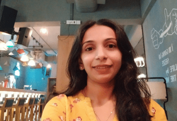
I opted for a BA with a major in English because I needed a flexible degree while working. The curriculum is comprehensive and has been a great fit for my needs.
I opted for a BA with a major in English because I needed a flexible degree while working. The curriculum is comprehensive and has been a great fit for my n ...
I’m currently pursuing online BA with a major in Political Science due to my passion for the subject. The faculty is very good, and the curriculum is well-structured. After completing my degree, I plan to pursue an MA in Political Science.
I’m currently pursuing online BA with a major in Political Science due to my passion for the subject. The faculty is very good, and the curriculum is ...
Become a community manager to enhance your personal & professional growth.
Become a community manager to enhance your personal & professional growth. ...
Meeting my classmates for the first time felt great and I’m happy I was able to make new friends.
Meeting my classmates for the first time felt great and I’m happy I was able to make new friends. ...
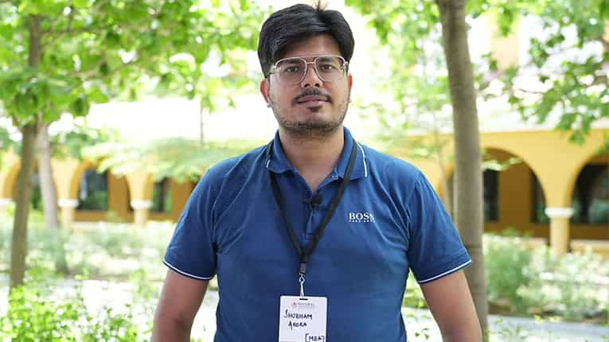
So far, I interacted with my friends on WhatsApp groups which didn’t allow me to get to know them personally. I’m glad I got to know more about my friends through Ekam.
So far, I interacted with my friends on WhatsApp groups which didn’t allow me to get to know them personally. I’m glad I got to know more about my fri ...
A collaborative event like this boosted my career as meeting professionals from different industries helped me improve my professional network.
A collaborative event like this boosted my career as meeting professionals from different industries helped me improve my professional network. ...

Having worked in enterprise resource planning for the past three years, I made the decision to transition my career into the thriving field of data science. However, I was determined to do so without leaving my current job, and Online Manipal happened to be the best choice. The study materials provided proved were excellent, and the faculty members were very helpful.
Having worked in enterprise resource planning for the past three years, I made the decision to transition my career into the thriving field of data science. ...


Being a working professional, having flexibility in terms of online classes and exams were of utmost importance to me. I wanted to upskill without quitting my job and this online MBA from MAHE happened to be the best option. Also, Manipal has a great brand value.
Being a working professional, having flexibility in terms of online classes and exams were of utmost importance to me. I wanted to upskill without quitting ...

I enrolled in this online MA-JMC as the same program was not available in my city. Pursuing this program not only enhanced my video-making skills, but also helped me gain in-depth knowledge in several aspects of media.
I enrolled in this online MA-JMC as the same program was not available in my city. Pursuing this program not only enhanced my video-making skills, but also ...
I currently work in supply chain management and wanted to elevate my career to new heights. So I decided to pursue an online MBA. I believe the well-defined curriculum will help me enhance my domain knowledge and help me gain new skills required for my current role.
I currently work in supply chain management and wanted to elevate my career to new heights. So I decided to pursue an online MBA. I believe the well-defined ...
A few years back, I got initiated into the stock market and took a strong interest in exploring it. However, there was a gap in the input and returns, and the main reason has been my lack of professional knowledge in the domain. I believe this online MBA in BKFS will help me deepen my knowledge and explore career prospects of my interest. The program curriculum is industry-relevant. Engaging with fellow professionals has proven to be an enriching experience. I hope to secure a position in a leading investment banking firm after the completion of this program.
A few years back, I got initiated into the stock market and took a strong interest in exploring it. However, there was a gap in the input and returns, and t ...
With 3 years of hands-on experience in the financial sector, I want to broaden my exposure across different facets of the finance industry through this online MBA. The program’s flexibility has been a game-changer, allowing me to balance work and family commitments seamlessly. My goal is to climb up my career ladder and explore leadership positions.
With 3 years of hands-on experience in the financial sector, I want to broaden my exposure across different facets of the finance industry through this onli ...
With 22 years of experience in banking and finance, I find myself seeking new horizons within my organization. Opting for a premium institution like TAPMI for an online MBA has been a deliberate choice to gain profound insights and elevate my career prospects. This program, tailored for working professionals, provides a valuable opportunity in enhancing my career further.
With 22 years of experience in banking and finance, I find myself seeking new horizons within my organization. Opting for a premium institution like TAPMI f ...
I am a software developer who successfully transitioned to become a data engineer. MUJ’s online MCA degree has allowed me to gain the necessary skills needed for my job role. As a working professional, the weekend classes were great, allowing me to learn comfortably. The faculty were excellent and the program offered me great flexibility allowing me to learn at my own pace.
I am a software developer who successfully transitioned to become a data engineer. MUJ’s online MCA degree has allowed me to gain the necessary skills ...

I currently work in the pharmaceutical domain. However, I wanted to gain new skills, which is why I decided to pursue this MBA in Pharmaceutical Management. I believe this online degree will help me enhance my domain knowledge, skills such as leadership, communication, and teamwork, which are very essential.
I currently work in the pharmaceutical domain. However, I wanted to gain new skills, which is why I decided to pursue this MBA in Pharmaceutical Management. ...
As an entrepreneur, I wanted to pursue a master’s degree to evolve and gain some skills that will help me market my product better. This online MBA from MUJ has helped me grasp the intricacies of business management, enhance my skills and build my professional network.
As an entrepreneur, I wanted to pursue a master’s degree to evolve and gain some skills that will help me market my product better. This online MBA fr ...

After 6 years of monkhood, I returned to the materialistic life and wanted to build my own career. When I started working, I realized I was losing out on opportunities because I didn’t have a degree. I chose to pursue an online BBA from MUJ, which is helping me in my current job role. I have received great career advise from faculty members and I’m able to learn at my own convenience.
After 6 years of monkhood, I returned to the materialistic life and wanted to build my own career. When I started working, I realized I was losing out on op ...
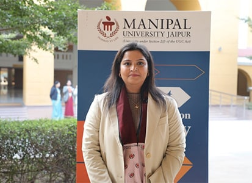
To strengthen my technical skills, I enrolled in this online MCA degree. I feel this degree is a golden opportunity for me as it has also helped me in my further studies as I’m planning to pursue my MS degree from Johnson and Wales University, USA.
To strengthen my technical skills, I enrolled in this online MCA degree. I feel this degree is a golden opportunity for me as it has also helped me in my fu ...

This program has been instrumental in equipping me with knowledge in programming languages such as Python and SQL, providing valuable skills for my upcoming job search. The unique virtual lab experience added an extra layer to my learning. I extend a special thanks to my mentor, whose continuous support was invaluable throughout my educational journey. In retrospect, I am convinced that choosing to pursue an online degree from MUJ was the perfect decision.
This program has been instrumental in equipping me with knowledge in programming languages such as Python and SQL, providing valuable skills for my upcoming ...
I have recently been promoted to a new role in my company, and I am eager to enhance my capabilities through a master’s degree that complements my professional growth. My experience with MUJ has been exceptional, and I highly recommend this program for its notable flexibility—allowing you to study at your own pace and convenience.
I have recently been promoted to a new role in my company, and I am eager to enhance my capabilities through a master’s degree that complements my pro ...

I have learned key financial skills through this MBA, which has helped my current career. As this is a management degree, in addition to finance, I have learned how to be a good manager. We were provided with study materials, attended live lectures, completed assignments, and took online exams that gave me an on-campus feeling. The online exams were conducted with flexibility for working professionals.
I have learned key financial skills through this MBA, which has helped my current career. As this is a management degree, in addition to finance, I have lea ...

Currently employed with the Aditya Birla Group, after a break of 10 years from academics, I chose to pursue an online MBA to acquire practical skills that will help contribute to my current job role. By interacting with peers from diverse professional backgrounds, this program has not only equipped me with valuable skills but has also expanded my professional network.
Currently employed with the Aditya Birla Group, after a break of 10 years from academics, I chose to pursue an online MBA to acquire practical skills that w ...

Choosing an online BCom degree has been a strategic decision for me, especially considering my aspirations to study abroad. The flexibility offered by this program grants me ample time to prepare for exams while pursuing my goals. My mentors have been supportive and go the extra mile to ensure we grasp complex concepts.
Choosing an online BCom degree has been a strategic decision for me, especially considering my aspirations to study abroad. The flexibility offered by this ...
The video content available on the student portal has turned out to be very helpful in my learning journey. Through this program, I’ve gained expertise and skills that will help me take significant strides in advancing my career and exploring better job opportunities.
The video content available on the student portal has turned out to be very helpful in my learning journey. Through this program, I’ve gained expertis ...

I enrolled in this online master’s degree program to enhance my skills in data science. The mentors’ support has been instrumental in my progress, and the interactive classes have made the learning process engaging. The curriculum, designed in line with industry trends, has equipped me with practical skills that are relevant in today’s professional landscape.
I enrolled in this online master’s degree program to enhance my skills in data science. The mentors’ support has been instrumental in my progres ...
Amidst my responsibilities in an associate role, I aspire to shift to a managerial position. As a dedicated working professional, Online Manipal has proven to be the perfect choice for me. I am confident that this program will open doors to exciting opportunities in the field of investment banking once I have completed it.
Amidst my responsibilities in an associate role, I aspire to shift to a managerial position. As a dedicated working professional, Online Manipal has proven ...
The recorded sessions were very helpful for me when I couldn’t attend live classes. The regular quizzes on the LMS allowed me to assess myself. Moreover, I found it extremely convenient to write my exams online. With more than 1 year of work experience in HR, I hope to boost my career through this online MBA program.
The recorded sessions were very helpful for me when I couldn’t attend live classes. The regular quizzes on the LMS allowed me to assess myself. Moreo ...
The curriculum of the online MBA program offered by MUJ is very good. The LMS was easy to use and the free access to Coursera content allowed me to improve my knowledge. With 9 years of work experience, I’m looking for a promotion after the completion of this program.
The curriculum of the online MBA program offered by MUJ is very good. The LMS was easy to use and the free access to Coursera content allowed me to improve ...
The placement-related webinars conducted by Online Manipal were insightful and industry experts were knowledgeable. The sessions helped me improve my skills and I’m better prepared to attend job interviews. I believe I’ll find my dream career in HR or Finance after the completion of the program.
The placement-related webinars conducted by Online Manipal were insightful and industry experts were knowledgeable. The sessions helped me improve my skills ...
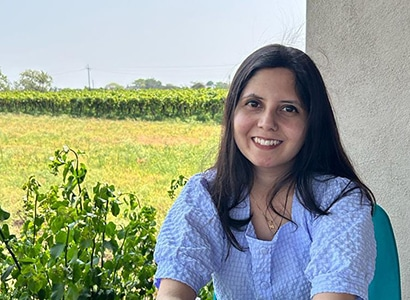
The career readiness webinars on interview skills were helpful for me as I’m looking for a well-paying job in HR, preferably in the corporate sector. The sessions were not only insightful but also very interactive.
The career readiness webinars on interview skills were helpful for me as I’m looking for a well-paying job in HR, preferably in the corporate sector. ...
My overall experience with Online Manipal was very good. The free access to paid Coursera content allowed me to expand my knowledge beyond what was taught in live classes. The online examination process was smooth and the help desk played a key role in ensuring I didn’t face any difficulty.
My overall experience with Online Manipal was very good. The free access to paid Coursera content allowed me to expand my knowledge beyond what was taught i ...
The learning management systems (LMS) is easy to use and has all the information that a student requires. I’m able to expand my subject knowledge by accessing several e-books from e-libraries. Moreover, the recorded sessions have helped me cope up with my academics at times when I have missed live classes.
The learning management systems (LMS) is easy to use and has all the information that a student requires. I’m able to expand my subject knowledge by a ...
Online degrees are the best option in today’s time as they are affordable and flexible. The online BCA degree from MUJ is benefitting me with industry ready skills and I would be better prepared to find a suitable career option in today’s competitive job market.
Online degrees are the best option in today’s time as they are affordable and flexible. The online BCA degree from MUJ is benefitting me with industry ...

Studying online MSc in Business Analytics is aiding my career transition from aeronautical engineering to full time business analytics. I’ve had a great experience with Online Manipal. The modern curriculum, live classes, faculty and mentorship are helping me in enhancing my knowledge.
Studying online MSc in Business Analytics is aiding my career transition from aeronautical engineering to full time business analytics. I’ve had a gre ...
I couldn’t pursue my master’s degree after my marriage. Now that my son is grown up, I realized it was time to restart my career. With technical experience in data science, I needed the right set of managerial skills to climb the career ladder. I believe this online MBA program will give me the necessary career boost.
I couldn’t pursue my master’s degree after my marriage. Now that my son is grown up, I realized it was time to restart my career. With technical ...
This course is the best option for someone who wants to pursue a career in Data Analytics. It’s a good course with a highly experienced teaching faculty.
This course is the best option for someone who wants to pursue a career in Data Analytics. It’s a good course with a highly experienced teaching facul ...
This program is amazing for those candidates who want a career transition or who are looking to start their career in the field of analytics. It’s best to focus on the curriculum they made, and if you follow it strictly you will definitely have a good job just the way I did.
This program is amazing for those candidates who want a career transition or who are looking to start their career in the field of analytics. It’s bes ...
As a JS developer I was making a modest salary in a stagnant role and I wasn’t excited about my prospects. But this course has helped in my career advancement.
As a JS developer I was making a modest salary in a stagnant role and I wasn’t excited about my prospects. But this course has helped in my career adv ...

With 3 years of work experience in the analytics field, I want to explore better job opportunities in the emerging domain of data science. The course curriculum of this program is perfect for me to upgrade my skills & knowledge. The free access to paid Coursera content is extremely helpful. The learning management system is also easy to use.
With 3 years of work experience in the analytics field, I want to explore better job opportunities in the emerging domain of data science. The course curric ...

Despite coming from a commerce background, my passion for business analytics led me to pursue this online certification program. From videos, quizzes and discussion forums, the program curriculum is organized and structured very well. I’m able to study at my own pace without quitting my job.
Despite coming from a commerce background, my passion for business analytics led me to pursue this online certification program. From videos, quizzes and di ...

Having completed my master’s in business, I wanted to switch to the in-demand domain of business analytics, and I found MAHE’s certification program to be one of the best picks for me. The best part about this online certification program is that I can study at my own pace.
Having completed my master’s in business, I wanted to switch to the in-demand domain of business analytics, and I found MAHE’s certification program t ...

The coursework, graded quizzes, and assignments in the program provide hands-on experience, which can be applied to real-world business problems. I’m confident that this online MSc in business analytics program will equip me with the skills & knowledge required to make informed business decisions. I’m able to connect with students from diverse backgrounds.
The coursework, graded quizzes, and assignments in the program provide hands-on experience, which can be applied to real-world business problems. I’m confid ...

I have 2 years of work experience in IT as an Application Engineer. Through this program, I hope to expand my knowledge in business analytics and apply it to my current job role. Online Manipal has enabled me to learn at my convenience and the free access to Coursera content has helped me gain industry-relevant skills.
I have 2 years of work experience in IT as an Application Engineer. Through this program, I hope to expand my knowledge in business analytics and apply it t ...
For a long time, I have aspired to pursue a PG after completing my B.Tech, but circumstances hindered me. However, with 9 years of experience in the banking sector, I developed an interest in data analysis. MAHE’s online PGCP in Business Analytics is just the right pick for me. The live classes, study materials, and LMS have been helpful in grasping key concepts. I hope this program will assist me in my current banking role.
For a long time, I have aspired to pursue a PG after completing my B.Tech, but circumstances hindered me. However, with 9 years of experience in the banking ...
The industry readiness webinars conducted by Online Manipal were relevant for today’s market trends. The subject matter experts who delivered the webinars were experienced professionals and give us daily insights into key areas we must focus on.
The industry readiness webinars conducted by Online Manipal were relevant for today’s market trends. The subject matter experts who delivered the webi ...
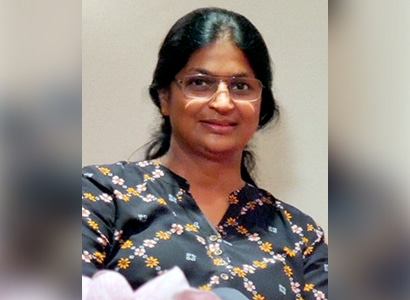
I always wanted to pursue an MBA in HRM but somehow my hectic work-life schedule after the army didn’t allow me any ‘me time’. Now that I have time in hand, I decided to pursue my online BBA from Manipal University Jaipur. I hope to supplement my knowledge with the free access to industry-relevant Coursera content provided by Online Manipal.
I always wanted to pursue an MBA in HRM but somehow my hectic work-life schedule after the army didn’t allow me any ‘me time’. Now that I have time in hand, ...
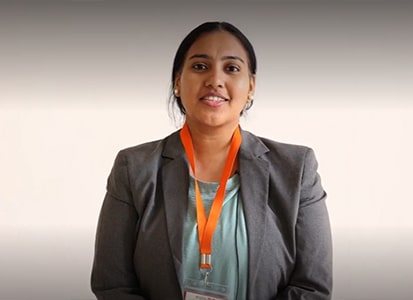
I attended the Ekam event that took place in Bangalore and the one in Manipal University Jaipur campus. It was good to see my peers in-person for the first time. It helped me create a stronger bond with my batchmates.
I attended the Ekam event that took place in Bangalore and the one in Manipal University Jaipur campus. It was good to see my peers in-person for the first ...
After pursuing my BBA through distance education a few years ago, I was looking for the right university to pursue my online MBA and enrolled in Manipal University Jaipur. The weekend classes were very convenient, and the curriculum is easy to understand. I completely made use of free access to paid Coursera content offered by Online Manipal. The courses in HRM and computer science were extremely helpful to me.
After pursuing my BBA through distance education a few years ago, I was looking for the right university to pursue my online MBA and enrolled in Manipal Uni ...

Coming from an accounting background, I wanted to leverage my knowledge of business analytics in my profession. Today, even the field of commerce uses business analytics tools like Power BI. I wanted to improve my skills in this domain so I can enhance my skills. I chose MAHE’s online program due to flexible learning opportunities. Since I had more time to complete my program compared to an on-campus degree, I can progress at my own pace.
Coming from an accounting background, I wanted to leverage my knowledge of business analytics in my profession. Today, even the field of commerce uses busin ...
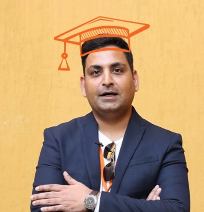
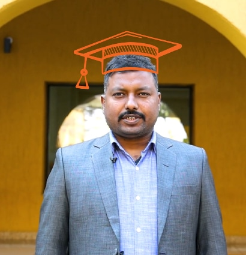
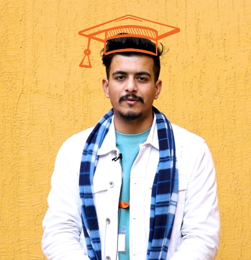
TAPMI provides academically rigorous courses and the MBA in BKFS program has an excellent curriculum that ensures practical application of business knowledge and skills. The program is beneficial for students from both banking and finance backgrounds.
TAPMI provides academically rigorous courses and the MBA in BKFS program has an excellent curriculum that ensures practical application of business knowledg ...
TAPMI’s MBA in BKFS curriculum is a perfect blend of practicality and academics. The program convers key aspects like real banking issues and ways to deal with them. The interactive sessions with industry experts were insightful and helpful.
TAPMI’s MBA in BKFS curriculum is a perfect blend of practicality and academics. The program convers key aspects like real banking issues and ways to deal w ...
TAPMI has played an instrumental part in shaping my career in finance. Subjects like mergers & acquisitions & market macrostructures have helped me in enriching my knowledge in the field of finance. The program has helped me build the foundation for my career.
TAPMI has played an instrumental part in shaping my career in finance. Subjects like mergers & acquisitions & market macrostructures have helped me ...
The MBA-BKFS journey with TAPMI has been a memorable one. The professors guided me in choosing the right path. The course has been an integral part of my learning journey.
The MBA-BKFS journey with TAPMI has been a memorable one. The professors guided me in choosing the right path. The course has been an integral part of my le ...
TAPMI’s MBA in BKFS was the perfect platform for someone like me, who had no prior knowledge in finance. I will always be grateful for the immense effort the college and faculty put into making us get a grip on subjects. I still use my notes from college for my day-to-day work, which itself is a testimony to how carefully the curriculum is curated.
TAPMI’s MBA in BKFS was the perfect platform for someone like me, who had no prior knowledge in finance. I will always be grateful for the immense eff ...
TAPMI has not only provided a nurturing environment for learning through a comprehensive curriculum but also helped in my personal development. Thanks to the supportive faculty for imparting knowledge which has contributed immensely towards my professional career.
TAPMI has not only provided a nurturing environment for learning through a comprehensive curriculum but also helped in my personal development. Thanks to th ...
The MBA in BKFS curriculum at TAPMI is based on a practical approach towards finance. This has helped me build a solid base and accelerate my professional growth.
The MBA in BKFS curriculum at TAPMI is based on a practical approach towards finance. This has helped me build a solid base and accelerate my professional g ...
I am glad I chose TAPMI’s MBA in BKFS program because the academic rigor, holistic curriculum, and industry exposure has accelerated my career growth. Having learned finance in the best way possible has enabled me to operate with a business-focused approach and has helped me stay ahead.
I am glad I chose TAPMI’s MBA in BKFS program because the academic rigor, holistic curriculum, and industry exposure has accelerated my career growth. Havin ...
The program is well structured, covering in-depth subjects in the Banking and Financial Services domain that caters to both banking and capital market enthusiasts. We got to learn from experienced faculty, who imparted invaluable knowledge that I can leverage in my career. During the program, there were corporate interactions that served as wonderful opportunities for us.
The program is well structured, covering in-depth subjects in the Banking and Financial Services domain that caters to both banking and capital market enthu ...
I’m a teacher by profession. Due to my hectic schedule, I couldn’t pursue an on-campus degree. The online MCA program offered by MUJ is flexible for me and I’m able to expand my knowledge.
I’m a teacher by profession. Due to my hectic schedule, I couldn’t pursue an on-campus degree. The online MCA program offered by MUJ is flexible for me and ...
I’ve been working in the supply chain industry for 2 years. With the aim of improving my skills and enhancing my knowledge in this domain, I chose MAHE to pursue this certification program. This online program has helped my study at my own pace and through flexible classes, I’m able to manage my work as well.
I’ve been working in the supply chain industry for 2 years. With the aim of improving my skills and enhancing my knowledge in this domain, I chose MAHE to p ...
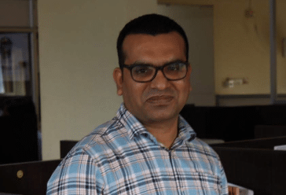
With 12 years of work experience in procurement and supply chain, I wanted to upskill in this domain. The curriculum of the online PGCP program by MAHE is industry-relevant and is helping me in applying my skills on the job. The e-tutorials are very helpful and cover in-depth topics.
With 12 years of work experience in procurement and supply chain, I wanted to upskill in this domain. The curriculum of the online PGCP program by MAHE is i ...
I have 2 years of work experience in procurement, and I hope to gain in-depth knowledge in logistics and supply chain management through this program. The course curriculum covers everything that my work demands and I’m able to improve my skills.
I have 2 years of work experience in procurement, and I hope to gain in-depth knowledge in logistics and supply chain management through this program. The c ...
I have over 10 years of work experience in IT. Working with Google, I wanted to upskill myself and expand my knowledge in data science to meet the needs of my job and advance my career. MAHE’s online MSc in data science program has helped me improve my knowledge. The e-learning material is extensive and is helping me in my career progression.
I have over 10 years of work experience in IT. Working with Google, I wanted to upskill myself and expand my knowledge in data science to meet the needs of ...
I chose to pursue my masters in data science because I want a career switch to this in-demand domain. The online class structure at MAHE is great and the faculty are experienced and knowledgeable. I hope to enhance by career after completion of this program.
I chose to pursue my masters in data science because I want a career switch to this in-demand domain. The online class structure at MAHE is great and the fa ...
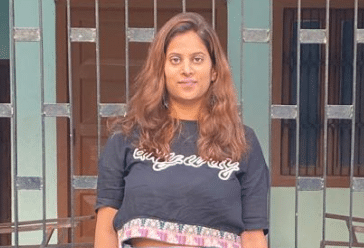
With 2 years of experience in sales, I wanted to pursue an online MBA in Marketing to improve my job prospects and for better salary packages. However, I didn’t want to quit my job. Thanks to the flexibility of online classes, I’m able to manage my work and studies.
With 2 years of experience in sales, I wanted to pursue an online MBA in Marketing to improve my job prospects and for better salary packages. However, I di ...
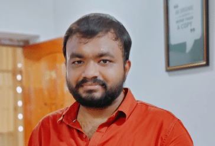
With some experience in digital marketing and graphic designing, I want to advance my career and gain in-depth knowledge in my domain. Through MAHE’s online MBA, I’m able to study anywhere, anytime, access recorded classes and get my doubts cleared from faculty who are approachable. Through free access to Coursera content, I’m able to enhance my skills and expand my knowledge.
With some experience in digital marketing and graphic designing, I want to advance my career and gain in-depth knowledge in my domain. Through MAHE’s online ...
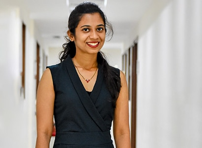
Taking a career break to do a postgraduate course or master’s was out of the question as I needed my current job to survive. That’s when I heard about Online Manipal, and the Online MBA offered by MUJ. This gave me hope that I could give my career and myself a second chance. The industry-readiness webinars were extremely helpful in preparing for placements.
Taking a career break to do a postgraduate course or master’s was out of the question as I needed my current job to survive. That’s when I heard about Onlin ...
After taking a career break for over a year, I wanted to upskill myself to get a better job. I’m glad I chose to pursue my online MBA from Manipal University Jaipur, as the degree is equivalent to a regular on-campus degree. Flexible classes have allowed me to manage my work and academics.
After taking a career break for over a year, I wanted to upskill myself to get a better job. I’m glad I chose to pursue my online MBA from Manipal Universit ...
As a working professional, I wanted to enhance my domain knowledge and move to managerial roles. I found Manipal University Jaipur’s online MBA program as the right opportunity to climb up my career ladder. The program has helped me build new skills required to thrive in the industry.
As a working professional, I wanted to enhance my domain knowledge and move to managerial roles. I found Manipal University Jaipur’s online MBA program as t ...
After being married off, I couldn’t fulfill my dream of continuing my studies. With a bachelor’s degree in hand and one and a half years of experience in accounts, I chose to pursue an online MBA degree from the comfort of my home. With Online Manipal, I’m able to study at my own pace and convenience. So, I’m easily able to balance my academics and personal commitments.
After being married off, I couldn’t fulfill my dream of continuing my studies. With a bachelor’s degree in hand and one and a half years of experience in ac ...

I was finding it difficult to attend offline classes and go to college regularly, so I decided to pursue an online M.Com degree from the comfort of my home. After competing for my online degree, I hope to explore a lucrative career in the banking industry or in accounting.
I was finding it difficult to attend offline classes and go to college regularly, so I decided to pursue an online M.Com degree from the comfort of my home. ...

With close to 4 years of experience in accounting, I chose to pursue an M.Com degree. I’m very happy with the experience at Manipal University Jaipur, since the program is delivered completely in online mode without any hassle. I’m able to access the recorded classes when I miss live sessions. As a working professional, I’m able to maintain work-life balance.
With close to 4 years of experience in accounting, I chose to pursue an M.Com degree. I’m very happy with the experience at Manipal University Jaipur, ...

With over 2 years of work experience in accounting, I wanted to pursue an online M.Com degree to boost my career further and get a higher salary. Thanks to Online Manipal, I’m able to manage my work life and academic through flexible live classes and recorded sessions which are available on the portal.
With over 2 years of work experience in accounting, I wanted to pursue an online M.Com degree to boost my career further and get a higher salary. Thanks to ...
During the pandemic, I was skeptical about taking up an on-campus degree. So, I chose to pursue my masters in journalism in the online mode. From live classes to faculty members, I have had a great experience with MUJ so far. I hope to pursue my dream media career after this program.
During the pandemic, I was skeptical about taking up an on-campus degree. So, I chose to pursue my masters in journalism in the online mode. From live class ...
I have been working as a lab technician in Manipal University Jaipur for 8 years, I have good technical skills like video recording and editing. However, I wanted to improve my knowledge, so I decided to pursue an online MA JMC. I want to pursue my PhD after this online program, and I also hope to become a news anchor one day.
I have been working as a lab technician in Manipal University Jaipur for 8 years, I have good technical skills like video recording and editing. However, I ...
Working in the education sector & social development sector for 5-6 years, I came across a tribal village in Telangana and I really wanted to capture their stories. But I didn’t have the right skills, attitude and mindset to capture them. This is where Manipal University Jaipur is empowering me with an online MA JMC degree. I’m able to leverage maximum out of this platform.
Working in the education sector & social development sector for 5-6 years, I came across a tribal village in Telangana and I really wanted to capture th ...

Funding my undergraduate degree and my younger brother’s education has been possible only because of Manipal University Jaipur’s affordable online B.Com degree. Thanks to Online Manipal, I’m able to manage my work and academics. I believe this online degree will help me become personally and financially independent.
Funding my undergraduate degree and my younger brother’s education has been possible only because of Manipal University Jaipur’s affordable online B.Com deg ...
I have always wanted to be an entrepreneur and pursuing an online B.Com degree through Online Manipal has given me the confidence to start my own business.
I have always wanted to be an entrepreneur and pursuing an online B.Com degree through Online Manipal has given me the confidence to start my own business. ...
I couldn’t complete my degree in the on-campus mode, so I chose MUJ to pursue my online BCA degree due to flexible learning. With close to 10 years of work experience, I hope to build my professional network through this program.
I couldn’t complete my degree in the on-campus mode, so I chose MUJ to pursue my online BCA degree due to flexible learning. With close to 10 years of work ...
As an entrepreneur, I wanted to pursue my education without affecting my business. Considering my innate passion for coding, I decided to pursue an online BCA from Manipal University Jaipur. Now, I’m able to focus on my academics as well as business.
As an entrepreneur, I wanted to pursue my education without affecting my business. Considering my innate passion for coding, I decided to pursue an online B ...
I was able to pursue my dream online BCA degree through Manipal University Jaipur’s scholarship. With the online degree program from MUJ, attending online classes and lectures on weekends has made it easier to manage my work and other household responsibilities along with my studies.
I was able to pursue my dream online BCA degree through Manipal University Jaipur’s scholarship. With the online degree program from MUJ, attending online c ...
I wanted to specialize in marketing, which is why I decided to start by pursuing an online BBA. As a working professional, an online degree was the best choice for me. The faculty at MUJ are experienced & guide us well and the student portal is user-friendly.
I wanted to specialize in marketing, which is why I decided to start by pursuing an online BBA. As a working professional, an online degree was the best cho ...

Working as a business associate in a bank and with 10 years of work experience, I want to improve my skills in marketing and sales. An online BBA degree was the best choice considering the flexible learning opportunities that Online Manipal offers. The curriculum of the online BBA program is very good and the mentorship we receive from course coordinators is excellent.
Working as a business associate in a bank and with 10 years of work experience, I want to improve my skills in marketing and sales. An online BBA degree was ...
My innate passion and love for learning pushed me to pursue an online degree at the age of 62. With this online program, I hope to explore my knowledge in the emerging domain of data science. I thank Online Manipal for this wonderful opportunity and for constantly supporting me. I strongly believe that age is just a number, and learning has no end.
My innate passion and love for learning pushed me to pursue an online degree at the age of 62. With this online program, I hope to explore my knowledge in t ...
Working in a tech giant for a few years, I needed to pursue a master’s degree to get a promotion and advance in my career. I decided to pursue an online MCA degree because I didn’t want to quit my job. Moreover, the online proctored examinations were helpful as we didn’t have to go to a center to write our examinations.
Working in a tech giant for a few years, I needed to pursue a master’s degree to get a promotion and advance in my career. I decided to pursue an online MCA ...
Funding my undergraduate degree and my younger brother’s education has been possible only because of Manipal University Jaipur’s affordable online B.Com degree. Thanks to Online Manipal, I’m able to manage my work and academics through flexible learning opportunities. I believe this online degree will help me become personally and financially independent.
Funding my undergraduate degree and my younger brother’s education has been possible only because of Manipal University Jaipur’s affordable online B.Com deg ...
I am a professional having 10+ years of experience in the IT industry. I am a developer by profession and marathon runner by passion. I joined the online BCA program at Manipal University Jaipur and thanks to Online Manipal for playing a part in fulfilling my dreams.
I am a professional having 10+ years of experience in the IT industry. I am a developer by profession and marathon runner by passion. I joined the online BC ...
With 6-7 years of work experience in supply chain, I wanted to earn an online undergraduate degree without quitting my job. I’m able to manage my work-life balance through Online Manipal’s flexible learning opportunities. The content on the student portal is good and the live classes are insightful. I want to pursue an online MBA in supply chain management after completing this program.
With 6-7 years of work experience in supply chain, I wanted to earn an online undergraduate degree without quitting my job. I’m able to manage my work-life ...

I was married off at a young age and couldn’t continue my studies further. After my 12th grade, I couldn’t study for over 5 years. With Online Manipal, I’m able to study at my own pace and convenience. I hope to pursue my MBA degree as well and become an HR manager in future.
I was married off at a young age and couldn’t continue my studies further. After my 12th grade, I couldn’t study for over 5 years. With Online Manipal, I&# ...

I always wanted to pursue my higher education dream without quitting my job, and MUJ has made it possible for me through their online degrees. My online MCA degree has given me wings to fly and chase my career aspirations.
I always wanted to pursue my higher education dream without quitting my job, and MUJ has made it possible for me through their online degrees. My online MCA ...
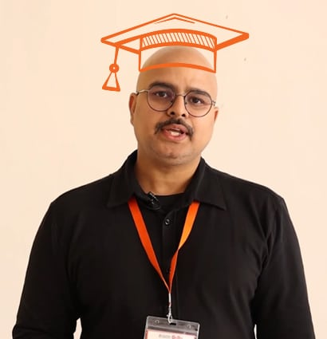


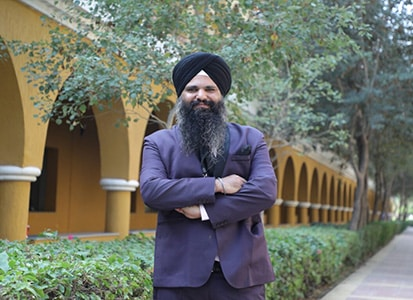